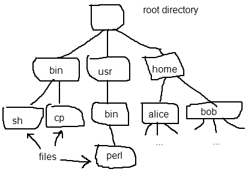

We have talked about memory management mostly from the perspective
of the OS kernel providing virtual address spaces for user processes to
run in. However, the kernel has its own memory management to
consider.
Most operating systems keep all of their own code and data mapped
into the kernel address space at all times. Kernel memory is
generally not paged.
It is easy to see why allowing the kernel
address space to be paged is problematic. Imagine a page fault in
a user process address space. The CPU will transfer control to
the kernel's page fault handler. Now imagine that the frame
containing the code of the kernel's page fault handler has been paged
out. This would cause a recursive
page fault: a page fault while trying to handle a page fault.
As another potential problem, think about
what would happen if a pagein needs to read data from a disk file, but
the code of the disk device driver has been paged out.
Physical memory is cheap, and engineering
an OS kernel is hard. Therefore, simplifying the kernel design at
the expense of fixing some of of the kernel memory is justifiable.
Like any program, the OS kernel will need to allocate and free small
chunks of memory as needed. For this purpose it generally sets
aside a portion of its address space as the kernel heap. The kernel heap
provides general-purpose allocation using malloc and free functions. E.g., in
Linux these are called kmalloc
and kfree.
Because malloc and free are used very frequently they need to be
fairly fast. In addition to allocation/free speed, it is
desirable that the heap allocation system use memory efficiently.
The fragmentation of a heap is a measure of how much space is wasted:
Internal
fragmentation: memory wasted because an allocated buffers are
larger than they need to be.
External
fragmentation: memory wasted because regions of the heap between
allocated chunks are too small to do anything useful with.
There are a number of heap memory allocation algorithms that are
commonly used:
Buddy
algorithm: heap memory is divided into power-of-2 size
regions. A larger region may be split in 2 to create two
half-size regions, or "buddies". When a chunk is freed, a check
is performed to see if its buddy is also free. If so, the buddies
are coelesced to form a
larger (2x size) region. The buddy algorithm has no external
fragmentation, but in general suffers from internal fragmentation.
Slab
algorithm: Optimized for allocation of small, fixed-size
objects. The heap is divided up into slabs, which are large enough to
contain a fairly good number of small objects, all of the same
type. A slab can be in 2 states:
When an object needs to be allocated, the
slab allocator tries to find a partial slab and allocate the object out
of an available slot in that slab. If no partial slab is
available, then the allocator finds and uses an empty slab.
The slab algorithm does not have any
internal fragmentation at all: the objects in a slab are packed in
without any space between them. The algorithm can suffer from two
kinds of internal fragmentation. A small amount of space in each slab
might be wasted because there is some room left over after packing in
the maximum number of objects. Another kind of fragmentation can
occur if removing objects from slabs results in a situation where there
are a large number of slabs that each contain only a small number of
objects.
The slab allocator was introduced in Solaris, and is now used in
both Solaris and Linux.
In a virtual memory system, frames of memory can be stolen from VM
objects as page faults occur. The resulting pageouts and pageins
will often require I/O (generally disk I/O). When a frame of
memory is being used for I/O, the OS kernel needs to be careful that
the frame is not stolen while the I/O is taking place. Quite
often, disk I/O is performed using DMA (Direct Memory Access), where
the disk controller will transfer data to or from the disk without the
CPU's intervention. To ensure that frames are not stolen while
I/O is occurring, the OS kernel locks
the frame before starting the I/O. The mechanism for locking a
frame can be as simple as simply setting a flag associated with the
frame. When the I/O is complete the frame can be unlocked,
allowing the frame to be stolen again.
Basic concepts:
File: a sequence of bytes. Generally stored on a device, ususally a disk.
Directory: a collection of files and directories. Each file and directory contained in a directory is given a name. Within a single directory, no two items (files and directories) can have the same name.
Filesystem:
tree of directories and files. The root directory of the filesystem is
the ancestor of all files and directories in the filesystem. Paths identify files and
directories within the filesystem
namespace.

File operations:
Create:
create a new empty file
Write:
write some data to the file: either appending new data at the end of
the file, or overwriting existing data. Moves the logical file position.
Read:
read some data from the file. Moves the logical file position.
Reposition
(Seek): move the logical position (byte offset) within the
file. Next read or write will occur at this position.
Delete:
completely remove the file from the filesystem.
Truncate:
abandon all of the data currently contained in the file. After
truncation, the file contains no bytes.
A path is simply a sequence of names. Starting from the root
directory, each component of the path specifies the name of a
directory. The final component of the path specifies either a
file or directory.
Paths are called paths because they specify a way of traversing the
tree of directories starting from the root in order to reach a
particular tree node.
E.g.: /usr/bin/perl is a path in the
example filesystem hierarchy above.
The filesystem namespace
is the set of all possible paths.
Most operating system allow filesystems located on the various
devices connected to the computer to be mounted in user-defined locations
within the filesystem namespace. Mounting a filesystem means
overlaying the root directory of filesystem B on an existing
directory---the mount point---of
an already-mounted filesystem A. After the mount, any files or
directories that were in the mount-point directory become inaccessible
because they have been obscured by the contents of B's root directory.
Unix/Linux allow any filesystem to be mounted over any existing
directory. A typical strategy is to use a small filesystem as the
root filesystem, and have separate larger filesystems mounted over the
"usr" and "home" directories of the root filesystem.
Windows does not allow arbitrary mounts. Instead, each
filesystem is mounted on a drive
letter, which essentially creates a new (separate) filesystem
namespace.